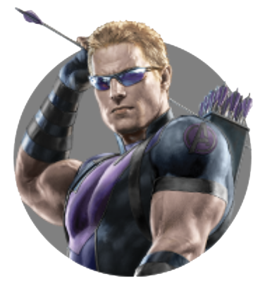

HAWKEYE
by Maksim4ik's
Posted on 29 Mart , 2019 at 12:00 PM
СОКОЛИНЫЙ ГЛАЗ - КЛИНТ БАРТОН
HAWKEYE - CLINT BARTON
Клинтон Фрэнсис «Клинт» Бартон (Clinton Francis «Clint» Barton), также известный как Соколиный глаз (Hawkeye) — опытный стрелок, агент Щ.И.Т.а и участник команды Мстители. Благодаря своей исключительной реакции, координации и меткости Соколиный Глаз — лучший стрелок и лучник, известный человечеству. У НАС ТАМ ЛЕТАЮЩИЙ ГОРОД, ПОНИМАЕШЬ? КОРОЧЕ, ГОРОД ЛЕТИТ В КОСМОС, А МЫ СРАЖАЕМСЯ С РОБОТАМИ, А У МЕНЯ ЛУК ДА СТРЕЛЫ. ПОСЛУШАТЬ, ТАК БРЕД. БИОГРАФИЯ Бывший спецагент Щ.И.Т.а., был нанят Ником Фьюри для слежения за Тессерактом. Разум Бартона был взят под контроль Локи с помощью Скипетра. Тем не менее, во время нападения на Хеликэрриер, благодаря Чёрной вдове, он был освобождён от контроля Локи и присоединился к Мстителям в борьбе с армией пришельцев Локи в Битве за Нью-Йорк, которая завершила Вторжение читаури. Позже он продолжил работать на Щ.И.Т., до его краха, после которого он вместе со Мстителями работал над уничтожением остатков ГИДРЫ, а также зловещим искусственным интеллектом Альтроном. После наступления Альтрона, Бартон решил покинуть команду Мстителей и вернулся к своей жене и детям. Тем не менее, вскоре он был завербован Капитаном Америка, чтобы помочь ему в его битве против Заковианского договора. В результате, Бартон на короткое время был заключён в Рафте, но вскоре был тайно освобождён Роджерсом. Бартон вернулся домой к жене и детям. Он и Лэнг заключили соглашение с правительством, что будут находиться под домашним арестом. Это помогло им избежать возвращения в Рафт. Согласно сделке, Бартон и Лэнг должны были находиться под домашним арестом временно, и их регулярно проверяли. Стало известно место нахождения секретного дома Бартона. Позже срок ареста закончился, но Клинт уже не имел право нарушить Заковианские соглашения, хотя это не имело значения, ведь он и так ушел в отставку.
СПОСОБНОСТИ
Основной способностью Клинта Бартона является его меткость в стрельбе из лука. Уникальные навыки Соколиного Глаза сделали его одним из основных членов Мстителей и одним из лучших агентов Щ.И.Т.а до падения агентства.
Меткий стрелок: Бартон — один из самых метких стрелков в мире. Он может стрелять из огнестрельного оружия и луков с непревзойденной точностью, хотя предпочтение отдает луку. Глазомер, зоркость и координация позволяют ему стрелять несколькими стрелами сразу. Клинт попадает даже по маленьким или движущимся целям. Он левша, потому что лук держит правой рукой, а стрелу вкладывает левой. Он может попасть в яблочко тремя дротиками одновременно. Эти навыки пригодились ему даже при игре в гольф.
Умелый убийца: Бартон — один из лучших убийц в Щ.И.Т. Именно ему поручали такие важные задания, как устранение Черной Вдовы или огневая поддержка на месте обнаружения молота Тора.
Акробат: Клинт очень гибкий и ловкий и во время боя способен выполнять акробатические трюки.
<Мастер боевых искусств: Клинт не только стреляет издали, но и может вступить в ближний бой. Он использует техники из различных боевых искусств. Он смог обезвредить Алую ведьму, будучи под воздействием Локи, Клинт на равных бился с Черной вдовой. Бартон даже смог некоторое время противостоять значительно более сильному Т’Чалле.
Эксперт-тактик: Бартон знаком с военными тактическими методами, способен руководить командой оперативников.
Умелый пилот: Клинт умеет пилотировать Квинджет и может выполнять сложные маневры в тяжелых условиях и во время боевых действий.
Знание нескольких языков: Согласно досье Щ.И.Т., Бартон знает английский, русский, китайский и арабский.
About

Maksim4ik
Age:14
Sex:male
maksdrobotushchenko@gmail.com